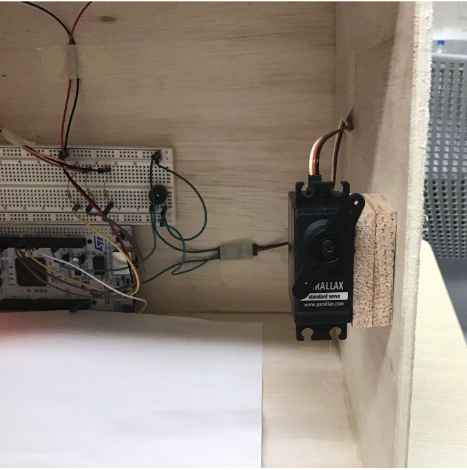

Advanced Safe System


Project Summary
The Advanced Safe System is an embedded microcontroller project designed to provide enhanced safety for valuables. It combines an alphanumeric keypad, break beam sensors, RGB LEDs, a siren, and servo motor to create a secure, user-friendly safe. The system supports custom passcodes (with letters and numbers), visual and audio status indicators, and PC serial communication for passcode management and debugging. This project demonstrates effective modular design and real-world application of embedded systems for security.
- Secure Passcode System: Users can lock/unlock the safe with a 4-digit code (including letters), changed via keypad or PC serial interface.
- Multi-state Feedback: RGB LEDs indicate safe status (unlocked, locked with/without item, error), and a siren alerts theft or tampering.
- Break Beam Sensor: Detects presence of valuables and triggers state changes or alarms as needed.
- Servo Motor Lock: Physically locks/unlocks the safe when correct code is entered, with robust mechanism design.
- PC Serial Integration: Allows users to reset codes and receive feedback/error messages directly from the microcontroller.
Technical Highlights
- Hardware: NUCLEO microcontroller, matrix keypad, break beam sensors, RGB LEDs, active-low siren, and servo motor, all integrated on a custom breadboard and plywood enclosure.
- Software: Modular C++ code with seven modules, finite state machines for debouncing and lock logic, and UART for PC serial communication.
- Safety Features: Red LED and siren activate on incorrect code or break-in; all three LEDs and siren activate if theft is detected when locked.
- Code Management: Code can be reset and managed via keypad or PC serial, with error handling for invalid key entries.
- Mechanical Design: Servo motor and plywood enclosure designed for reliable locking and ease of assembly.
Lessons Learned
- Modular design (both hardware and software) simplifies troubleshooting and future upgrades.
- State machines and proper debouncing are vital for reliable keypad and sensor inputs.
- Integrating multiple input/output devices (keypad, sensors, LEDs, siren, servo) requires careful planning of pin assignments and power management.
- PC serial communication is a powerful tool for debugging and user interface in embedded systems.
- Mechanical design (servo placement, enclosure, wiring) is as important as code for a robust embedded solution.